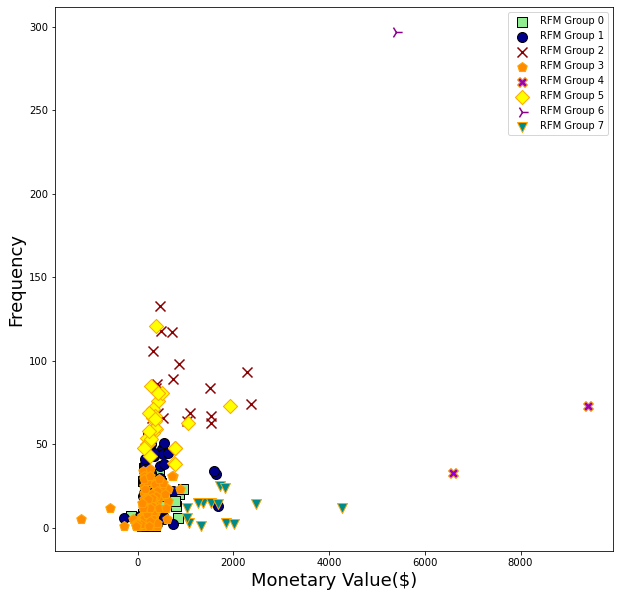

Data Source:
https://archive.ics.uci.edu/ml/datasets/online+retail
Segmentation:
RFM (Recency, Frequency and Monetary) segmentation
Algorithm :
Kmeans clustering
Eight different groups were observed:

Used: Python, Pandas, Numpy, k-means classification
Github: https://github.com/lumindak/Customer-Sigmantation